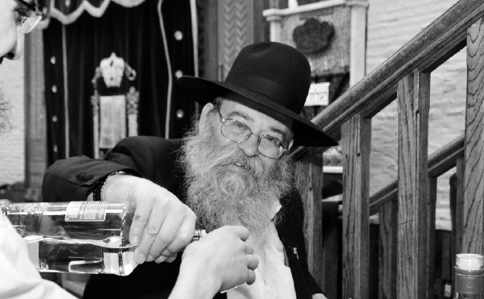

Shira V’zimra to Greet Moshiach
The Rebbe referred to the double Adars as “Sixty Days of Simcha.” We spoke with R’ Kuti Rapp, director of the Matteh Shira V’Zimra, who organizes joyous dancing every night of Adar in 770. We heard about the connection between simcha and bringing the Geula and what happened behind the scenes with the singing of Yechi on Rosh Chodesh Kislev 5753. * A happy interview.

SHIRA V’ZIMRA TO GREET MOSHIACH The Rebbe referred to the double Adars as “Sixty Days of Simcha.” We spoke with R’ Kuti Rapp, director of the Matteh Shira V’Zimra, who organizes joyous dancing every night of Adar in 770. We heard about the connection between simcha and bringing the Geula and what happened behind the scenes with the singing of Yechi on Rosh Chodesh Kislev 5753. * A happy interview. By R’ Yaron Tzvi Those who walk into 770 see the signs put up by the “Matteh Shira V’Zimra L’Kabbalas P’nei Moshiach” urging people to join the dancing at various times of the year to hasten the Geula. On 15 Elul, the day Tomchei T’mimim was founded, the highlight of the dancing is the chadaram; on 13 Tishrei, Anash are called upon to dance with joy of l’chat’chilla aribber. And in a leap year, which it is this year, there are sixty days of dancing! On Motzaei Shabbos, I joined the dancing in 770 which began when Shabbos was over and lasted a long time with the participation of hundreds of Chassidim. I looked around and saw that people had a special look of simcha in their eyes. This wasn’t “just another simcha,” but a simcha that expressed the imminent Geula and the immediate hisgalus of the Rebbe MH”M. The man behind this phenomenon is R’ Yekutiel (Kuti) Rapp, who along with his main job as mashgiach in Yeshivas Tomchei T’mimim in 770, also runs the Chabad outreach at Kennedy airport and urges Chassidim to fulfill the Rebbe’s horaa to increase joy. For twenty-two years now, he has been raising awareness about the importance of simcha as a major impetus to hasten the Geula. With the start of the Adar dancing, we asked R’ Rapp: What is the idea behind the dancing? Since the founding of Chassidus, simcha was a cornerstone in the Chassidic experience, but in recent years the Rebbe stressed that we need to be particularly happy as a way of preparing for and hastening the Geula. In the sicha of Parshas Seitzei 5748, the Rebbe spoke in wonderment, asking what else could be done to hasten the Geula. His conclusion was that “what was not yet done to bring Moshiach is the proper avoda of simcha for the purpose of bringing Moshiach. In addition to simcha breaking all boundaries, including the boundaries of galus, simcha has a special quality that brings the Geula.” The Rebbe clarified that he did not mean only to do mitzvos joyously, but “simcha in and of itself, pure joy, the avoda of simcha for the purpose of bringing Moshiach. Simcha will bring Moshiach.” If someone will ask, if simcha can hasten the Geula, why didn’t we hear about this in earlier generations? Why didn’t any G’dolei Yisroel promote this? The Rebbe answered this question, saying that due to the hardships of galus, Jews did not have the strength to rejoice with pure simcha. Only now, because we have to bring the Geula through simcha, “we are given special kochos so there can be pure simcha.” Concluded the Rebbe: “Instead of the lengthy talk and back and forth, they should just start doing it: go out and announce about a special addition in simcha in order to bring Moshiach. Surely, by doing this they will actually bring Moshiach and with the greatest haste, ‘He did not delay them even for the blink of an eye.’ Go try it and see!” Another time, in connection with the Simchas Beis HaShoeiva, the Rebbe said that if they come and ask why they were so happy, they should answer: Didn’t you hear? It is publicized in the newspapers that Moshiach will be coming any minute! We need to be happy all year long, but even more so in the month of Adar, as Chazal say, “Increase in joy,” especially this year, a leap year, when there are sixty days in a row of simcha like in 5752 when the Rebbe said “to increase in all matters of simcha.” Chassidim always expressed their joy in song and dance. It is explained in Chassidus that dancing shows that the joy has permeated all of a person, even his feet. When a person is aroused to joy, his entire body, including the coarsest limbs, feels his inner joy so that even his feet dance. When did they start organizing dancing in 770 all the nights of Adar? In Adar I 5752, after the Rebbe repeatedly urged about the need for extra simcha during the sixty days of Adar to nullify in sixty all undesirable things; and after receiving a special answer about the activities of Matteh Moshiach – “The time is auspicious to increase in joy and double as much ‘sixty days,’ I will mention it at the tziyun” – we arranged singing and dancing in 770 accompanied by instruments on the night of Shushan Purim Katan. The dancing began at ten at night and continued until midnight. Hundreds of people danced and at some point, R’ Berel Lipsker and R’ Shloma Majeski reviewed the Rebbe’s sicha of the night before. After the dancing, they wrote a report to the Rebbe and concluded with the request, “Just as we merited this evening, may we merit dancing tomorrow with Moshiach. We request a blessing of the Rebbe that we be able to continue with this and with success.” R’ Yitzchok Springer a”h, R’ Shlomo Majeski and R’ Shmuel Butman signed it. The dancing took place the next day too, on Thursday, but stopped the following week when some people said it was disturbing. A few days later, on Wednesday, 22 Adar, we received the Rebbe’s encouraging answer in which he said “may it be an ongoing and increasing activity,” and it was understood that the Rebbe wants this. This response was the impetus for having joyous dancing every night. After the Rebbe’s stroke on 27 Adar 5752, at Matteh Moshiach we were not sure whether to continue with the dancing that night. We went up to Rabbi Marlow, the Mara D’Asra’s office. He called the Rebbe’s room and asked R’ Groner what he thought. R’ Groner said, “Of course! This is what the Rebbe constantly says, to nullify undesirable things through simcha.” The dancing resumed with great joy. On Thursday of that week, there was a Siyum HaRambam. In the middle of it, R’ Groner spoke in a broadcast from the Rebbe’s room and said that he just heard the Rebbe say, “May there be an immediate healing with much song.” They danced all night with tremendous joy to the tune of Yechi and the words, “Der Rebbe iz gezunt, Moshiach kumt shoin.” In the period following 27 Adar 5752, we did not hear the Rebbe, but I heard the Rebbe’s doctor Dr. Eli Rosen say that during that time he heard the Rebbe often repeat the words, “shira v’zimra.” He said these words clearly. When I heard this, I decided that increasing the simcha and dancing would go under the name “Matteh Shira V’Zimra L’Kabbalas P’nei Moshiach.” In 5753, when the Rebbe began coming out on the balcony and encouraging the singing of Yechi after the davening, I thought it would be appropriate to accompany the singing with instruments to increase the joy. I brought a musician, but there were people who did not like this at all and did not let him play. At that t’filla, although the Rebbe had joined from his room, he did not come out to the balcony to encourage the singing of Yechi. It took two weeks to straighten things out. Then, on Rosh Chodesh Kislev 5753, I brought a musician to accompany the singing of the Chassidim. Everyone remembers that special day in which the Rebbe encouraged the singing of Yechi in a most special manner, including strong hand motions. From then on, I often brought musicians when the Rebbe came out to daven and the singing of Yechi was accompanied by great joy. You could often see how the Rebbe was examining the musical accompaniment and was happy with it. What is the deeper significance of the dancing? In one of the Rebbe Rayatz’s letters (Igros Kodesh Vol. 4, p. 290), Chassidic dance is compared to a Chassidic niggun. Chabad infused both of them with deep meaning and turned them into part of our service of Hashem. According to the teachings of Chabad Chassidus, dancing ought to match a person’s inner emotions. The more profound his understanding is, the greater is his simcha. So during times of simcha and inspiration in the courts of the Rebbeim, we are told that the leading dancers were elder Chassidim, the select ones. Clearly, behind every dance there is an inner content and a special feeling, which find expression through dancing. As for dancing to hasten the Geula, the Rebbe himself explained the inner meaning in a sicha of Parshas Seitzei 5748: “This simcha is made by contemplating that Moshiach is coming immediately, at which time the entire world will have ultimate simcha, which is why we already have the feeling of simcha in its purity (something like the simcha of the Geula).” We see that someone who is permeated with the Rebbe’s prophecy and announcement of the Geula, whose life is permeated with pure faith that this moment is the final moment in galus and we are about to enter the Geula – he has no questions about the dancing and he happily joins in. Are we not deluding ourselves when we rejoice now for the Geula? After all, we still do not have the Geula! The Rebbe often emphasized that we are already at “Erev Shabbos after midday,” and the Halacha is that we need to taste the Shabbos food on Erev Shabbos. Just as this is said regarding the study of Chassidus, which is a taste of the p’nimius ha’Torah that will be learned in the Future Time, so too, we need to partake of the simcha of the Geula. We also know that “where a person’s thoughts are, that is where he is,” and when we experience and rejoice with the simcha of the Geula, this itself puts us into a mindset of Geula.Regarding Chizkiyahu HaMelech, it says “Hashem wanted to make Chizkiyahu the Moshiach, and Sancheriv as Gog U’Magog. The Attribute of Judgment said to Hashem: Master of the universe, if Dovid King of Israel, who said a number of songs and praises before You, You did not make Moshiach, will you make Chizkiyahu, for whom You did all these miracles and yet he did not say shira before You, into Moshiach? In Yeshaya 39, there is an entire section about how Chizkiyahu thanked Hashem for the miracles that were done for him, and the Shla HaKadosh explains that Chizkiyahu ought to have thanked Hashem before the miracles occurred and not afterward, and that is what the Midrash means when it says, “he did not say shira before You –before the miracles.” So it is important that while we are in the final moments of galus, all year round and not just in Adar, that we be supremely happy as a taste of the future simcha, and also as thanks to Hashem for the future miracles of the Geula. Furthermore, the Rebbe once told (Lech Lecha 5741) about a gadol b’Yisroel who as a child wanted to eat an apple and his father did not let him. Being unable to get the apple by asking and pleading for it, he said the bracha on it, thus forcing his father to give it to him so it would not be a bracha in vain. So too, said the Rebbe, by a Jew rejoicing over the Geula with the bitachon that Hashem will soon send Moshiach, this itself compels, as it were, Hashem our Father to fill His children’s request. I was thinking about that. How can the Rebbe compare a bracha to simcha and say that just as the bracha cannot be in vain, so too the simcha cannot be in vain? What’s wrong with simcha in vain? The answer is, when it comes to holiness, there is nothing in vain; everything has a purpose. When a Jew rejoices over the Geula, Hashem won’t allow this feeling of joy to be in vain and will bring the Geula. As someone who is very involved with shleimus ha’aretz, you know the situation in Eretz Yisroel is not simple. If that wasn’t enough, we hear about heartbreaking tragedies and accidents. This is in addition to the usual problems people have to contend with. How is it possible to be happy nonetheless? Over the years, we have seen the Rebbe’s approach – that we need to increase the simcha specifically during times like these. Since we know that simcha “sweetens judgment,” as in the Chassidic explanation of “ki b’simcha Seitzei’u” that through simcha one gets out of unpleasant situations, it is specifically when we are in difficult times that simcha is so much more important and we need to make every effort to be happy. I remember that in the middle of the Yom Kippur War, when the situation was catastrophic and thousands of soldiers had been killed, including Chabad Chassidim, there were some elder Chassidim who stood in Gan Eden HaTachton wanting to give the Rebbe a pidyon nefesh to arouse mercy. The Rebbe refused to accept the p’n and said: “I am in a happy mode and they want to put me into mara sh’chora (gloom)?! If you want, take it and you read it at the Ohel.” In general, the Rebbe constantly demands simcha. He once said that Moshiach does not want to see somber faces, but happy ones. On another occasion, the Rebbe said about the Gemara “when you go to a city, follow its customs,” that there is a custom in America that is actually a mitzva. What is that custom? In America people say, “Say it with a smile,” and this fits with “serve Hashem with joy.” During the Shiva for R’ Peretz Hecht, R’ Leibel Groner said one time, R’ Peretz went to the Rebbe’s room and the Rebbe told him: I don’t want to talk to you because you are in a mara sh’chora. Then the Rebbe said: Go to the window, open it, and throw all the mara sh’chora out and then come back and we will talk. At first, R’ Hecht was shaken up, but then he went over to the window and after a while he returned and the Rebbe spoke to him. To the Rebbe, it all had to be with simcha. The Rebbe emphasized that the Rambam, at the end of Hilchos Sukka and Lulav, paskens that this simcha (of Dovid) should be part of every Jew’s avodas Hashem all year long. It is also interesting to take note of the circumstances in which Dovid expressed such enormous simcha. It was when he brought the aron to Yerushalayim which, in a way, began the process that led to the building of the Beis HaMikdash. We are also in the process leading to the building of the Beis HaMikdash, which is why we need to be extremely happy!
Beis Moshiach (staff). "Shira V’zimra to Greet Moshiach." Beis Moshiach, no. 916 (February 19, 2014).